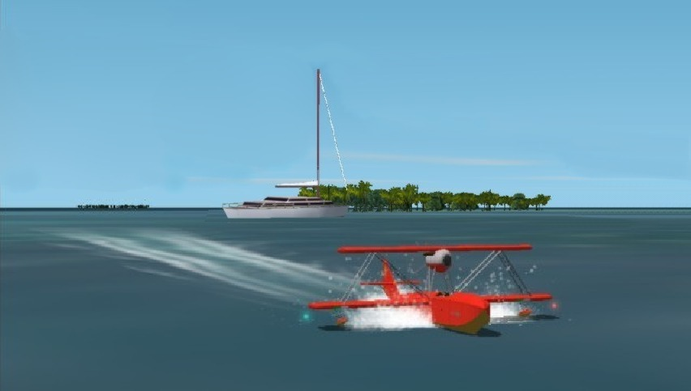

FLT. SIM
Add-on Scenery を組み込んだ Microsoft(R) Flight Simulator の
スクリーンショットなどを紹介しています。
サイト管理者である私の作品が主ですが，
世界中で素晴らしい作品が発表されています。
私以外の作品のスクリーンショットについては，
出来るだけ，詳細な情報を付加して行きたいと考えています。
PHOTO
雄大な大自然から，庭先で見かけたシーンまで，
自然の見せるハッとする瞬間を捉えようとしたコーナーです。
私の作品だけでなく，
素晴らしい作品をお送り下さる，Kamui氏の画像も，
氏の許可を頂いて掲載しております。
(左のサムネイルはKamui氏の画像です。)